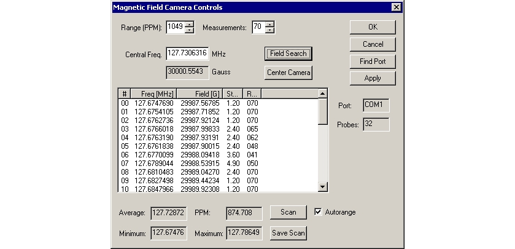

An initial listing (left to right) of probe number:#, frequency in MHz: Freq (MHz), magnetic field strength in Gauss: Field (G), standard deviation in Gauss, and measurement count readings from each probe in the array is also displayed in the text box.
Measurement counts should all read close to the number displaying for Measurements: at the top of the screen.
Illustration 9: Magnet Field Camera Controls After Choosing Field Search Button
